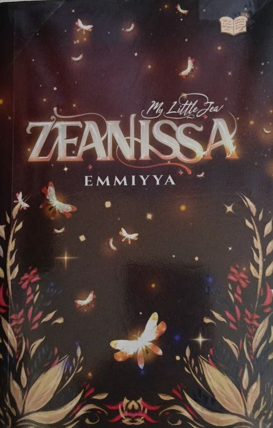
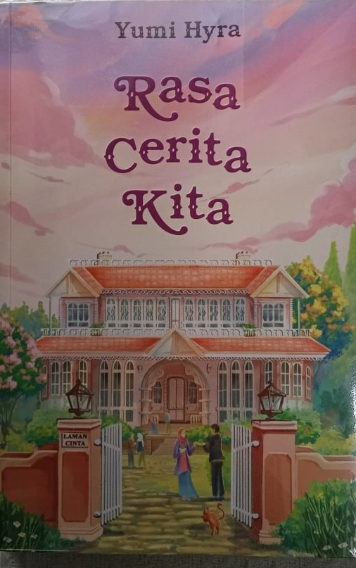
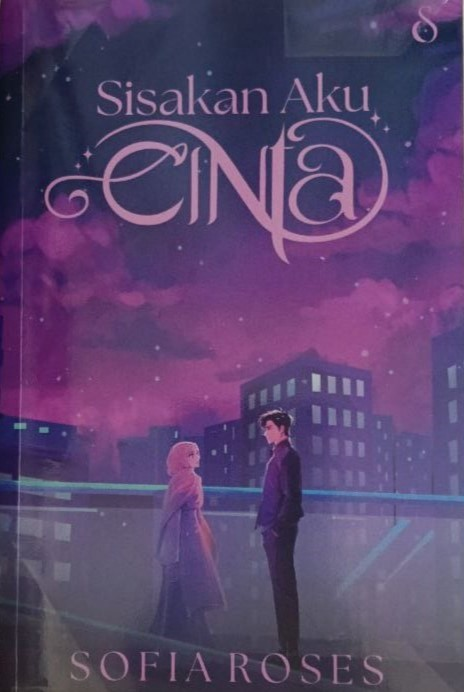
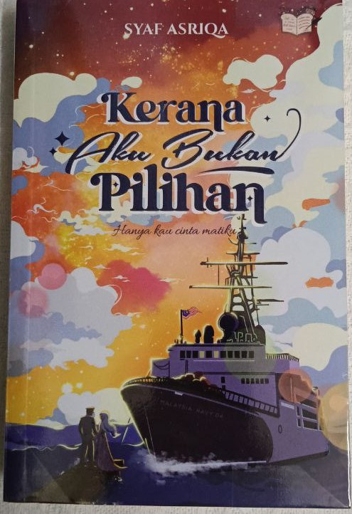
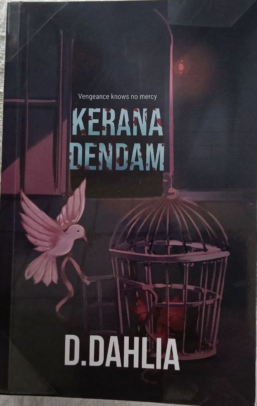
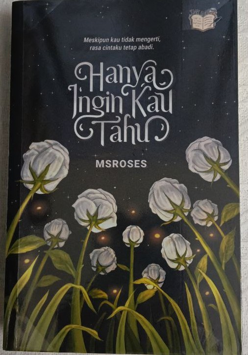

Romance Collection

ROMANCE
Love, Yours

ROMANCE
Zeanissa

ROMANCE
Rasa Cerita Kita

ROMANCE
Heliophile

ROMANCE
Sisakan Aku Cinta

ROMANCE
Kenzi x Embun

ROMANCE
Kerana Aku Bukan Pilihan

ROMANCE
Kerana Dendam

ROMANCE
Masihkah Ada Kita?

ROMANCE
Hanya Ingin Kau Tahu